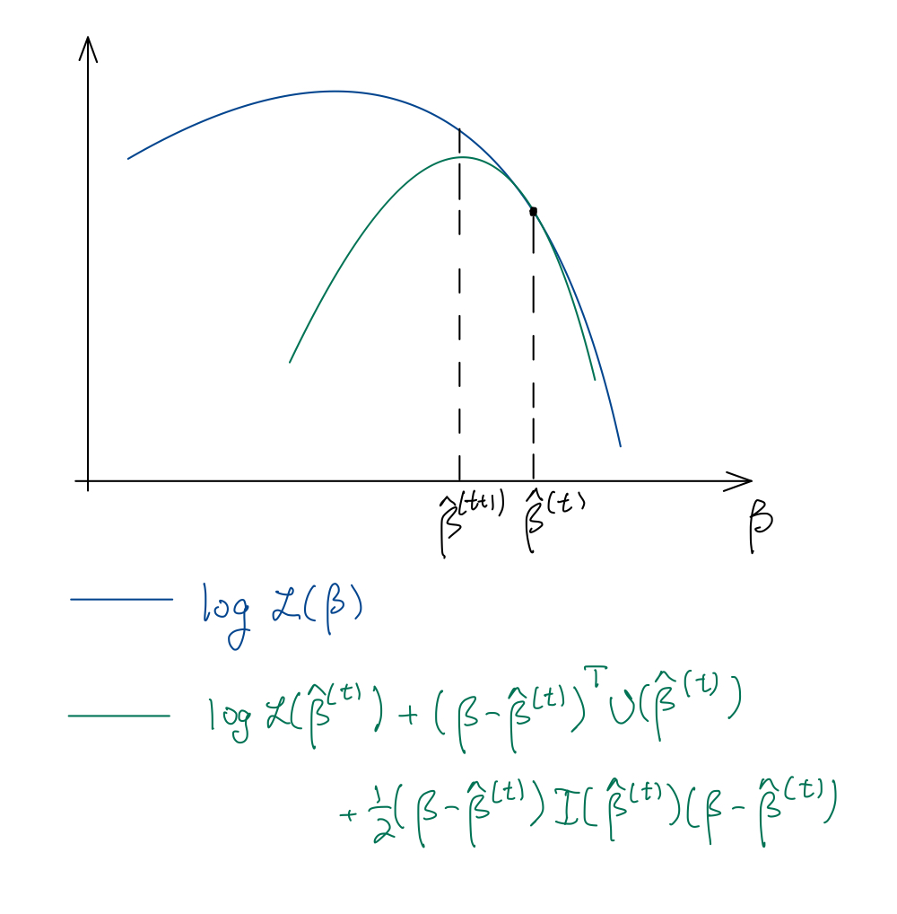

21 Parameter estimation
21.1 The GLM likelihood, score, and Fisher information
The log-likelihood of a GLM is:
\[ \log \mathcal L(\boldsymbol{\beta}) = \sum_{i = 1}^n \frac{\theta_i y_i - \psi(\theta_i)}{\phi_0/w_i} + \sum_{i = 1}^n \log h(y_i, \phi_0/w_i). \tag{21.1}\]
Let’s differentiate this with respect to \(\boldsymbol{\beta}\), using the chain rule:
\[ \begin{split} \frac{\partial \log \mathcal L(\boldsymbol{\beta})}{\partial \boldsymbol{\beta}} &= \frac{\partial \log \mathcal L(\boldsymbol{\beta})}{\partial \boldsymbol{\theta}}\frac{\partial \boldsymbol{\theta}}{\partial \boldsymbol{\mu}} \frac{\partial \boldsymbol{\mu}}{\partial \boldsymbol{\eta}}\frac{\partial \boldsymbol{\eta}}{\partial \boldsymbol{\beta}} \\ &= (\boldsymbol{y} - \boldsymbol{\mu})^T \text{diag}(\phi_0/w_i)^{-1} \cdot \text{diag}(\ddot{\psi}(\theta_i))^{-1} \cdot \text{diag}\left(\frac{\partial\mu_i}{\partial \eta_i}\right) \cdot \boldsymbol{X}\\ &= \frac{1}{\phi_0}(\boldsymbol{y} - \boldsymbol{\mu})^T \text{diag}\left(\frac{w_i}{V(\mu_i)(d\eta_i/d\mu_i)^2}\right)\cdot \text{diag}\left(\frac{\partial\eta_i}{\partial \mu_i}\right) \cdot \boldsymbol{X} \\ &\equiv \frac{1}{\phi_0}(\boldsymbol{y} - \boldsymbol{\mu})^T \boldsymbol{W} \boldsymbol{M} \boldsymbol{X}. \end{split} \]
Here, \(\boldsymbol{W} \equiv \text{diag}(W_i)\) is a diagonal matrix of working weights and \(\boldsymbol{M} \equiv \text{diag}\left(\frac{\partial\eta_i}{\partial \mu_i}\right) = \text{diag}(g'(\mu_i))\) is a diagonal matrix of link derivatives. Transposing, we get the score vector:
\[ \boldsymbol{U}(\boldsymbol{\beta}) = \frac{1}{\phi_0}\boldsymbol{X}^T \boldsymbol{M} \boldsymbol{W} (\boldsymbol{y} - \boldsymbol{\mu}). \tag{21.2}\]
To get the Fisher information matrix, note first that:
\[ \text{Var}[\boldsymbol{y}] = \text{diag}\left(\phi_0\frac{V(\mu_i)}{w_i}\right) = \phi_0 \boldsymbol{W}^{-1} \boldsymbol{M}^{-2} \tag{21.3}\]
we can compute the covariance matrix of the score vector:
\[ \begin{split} \boldsymbol{I}(\boldsymbol{\beta}) = \text{Var}[\boldsymbol{U}(\boldsymbol{\beta})] &= \frac{1}{\phi^2_0}\boldsymbol{X}^T \boldsymbol{M} \boldsymbol{W} \text{Var}[\boldsymbol{y}] \boldsymbol{M} \boldsymbol{W} \boldsymbol{X} \\ &= \frac{1}{\phi^2_0}\boldsymbol{X}^T \boldsymbol{M} \boldsymbol{W} \phi_0 \boldsymbol{W}^{-1}\boldsymbol{M}^{-2} \boldsymbol{M} \boldsymbol{W} \boldsymbol{X} \\ &= \frac{1}{\phi_0}\boldsymbol{X}^T \boldsymbol{W} \boldsymbol{X}. \end{split} \tag{21.4}\]
21.2 Maximum likelihood estimation of \(\boldsymbol{\beta}\)
To estimate \(\boldsymbol{\beta}\), we can set the score vector to zero:
\[ \frac{1}{\phi_0}\boldsymbol{X}^T \widehat{\boldsymbol{M}} \widehat{\boldsymbol{W}} (\boldsymbol{y} - \widehat{\boldsymbol{\mu}}) = 0 \quad \Longleftrightarrow \quad \boldsymbol{X}^T \text{diag}\left(\frac{w_i}{V(\widehat \mu_i)g'(\widehat \mu_i)}\right)(\boldsymbol{y} - \widehat{\boldsymbol{\mu}}) = 0. \]
These equations are called the normal equations. Unfortunately, unlike least squares, the normal equations cannot be solved analytically for \(\widehat{\boldsymbol{\beta}}\). They are solved numerically instead; see Section 21.3. Note that \(\phi_0\) cancels from the normal equations, and therefore the coefficients \(\boldsymbol{\beta}\) can be estimated without estimating the dispersion. Recall that we have seen this phenomenon for least squares. Also note that the normal equations simplify when the canonical link function is used, so that \(\eta_i = \theta_i\). Assuming additionally that \(w_i = 1\), we get:
\[ \boldsymbol{\widehat M} \boldsymbol{\widehat W} = \text{diag}\left(\frac{\widehat{\partial \mu_i/\partial \theta_i}}{V(\widehat \mu_i)}\right) = \frac{\ddot{\psi}(\widehat \theta_i)}{\ddot{\psi}(\widehat \theta_i)} = 1, \]
so the normal equations reduce to:
\[ \boldsymbol{X}^T (\boldsymbol{y} - \widehat{\boldsymbol{\mu}}) = 0. \tag{21.5}\]
We recognize these as the normal equation for linear regression. Since both ungrouped logistic regression and Poisson regression also use canonical links and have unit weights, the simplified normal equations (21.5) apply to the latter regressions as well.
In the linear regression case, we interpreted the normal equations (21.5) as an orthogonality statement: \(\boldsymbol{y} - \widehat{\boldsymbol{\mu}} \perp C(\boldsymbol{X})\). In the case of GLMs, the \(C(\boldsymbol{X}) \equiv \{\boldsymbol{\mu} = \mathbb{E}[\boldsymbol{y}]: \boldsymbol{\beta} \in \mathbb{R}^p\}\) is no longer a linear space. In fact, it is a nonlinear transformation of the column space of \(\boldsymbol{X}\) (a \(p\)-dimensional manifold in \(\mathbb{R}^n\)):
\[ C(\boldsymbol{X}) \equiv \{\boldsymbol{\mu} = \mathbb{E}[\boldsymbol{y}]: \boldsymbol{\beta} \in \mathbb{R}^p\} = \{g^{-1}(\boldsymbol{X} \boldsymbol{\beta}): \boldsymbol{\beta} \in \mathbb{R}^p\}. \]
Therefore, we cannot view the mapping \(\boldsymbol{y} \mapsto \boldsymbol{\widehat \mu}\) as a linear projection. Nevertheless, it is possible to interpret \(\boldsymbol{\widehat \mu}\) as the “closest” point (in some sense) to \(\boldsymbol{y}\) in \(C(\boldsymbol{X})\). To see this, recall the deviance form of the EDM density (19.4). Taking a logarithm and summing over \(i = 1, \dots, n\), we find the following expression for the negative log likelihood:
\[ -\log \mathcal L(\boldsymbol{\beta}) = \sum_{i = 1}^n \frac{d(y_i, \mu_i)}{2\phi_i} + C = \frac{\sum_{i = 1}^n w_id(y_i, \mu_i)}{2\phi_0} + C \equiv \frac{D(\boldsymbol{y}, \boldsymbol{\mu})}{2\phi_0} + C \equiv \frac12 D^*(\boldsymbol{y}, \boldsymbol{\mu}) + C. \tag{21.6}\]
\(D(\boldsymbol{y}, \boldsymbol{\mu})\) is called the deviance or the total deviance, and it can be interpreted as a kind of distance between the mean vector \(\boldsymbol{\mu}\) and the observation vector \(\boldsymbol{y}\). For example, in the linear model case, \(D(\boldsymbol{y}, \boldsymbol{\mu}) = \|\boldsymbol{y} - \boldsymbol{\mu}\|^2\). The quantity \(D^*(\boldsymbol{y}, \boldsymbol{\mu})\) is called the scaled deviance. In the linear model case, \(D(\boldsymbol{y}, \boldsymbol{\mu}) = \frac{\|\boldsymbol{y} - \boldsymbol{\mu}\|^2}{\sigma^2}\). Therefore, maximizing the GLM log likelihood is equivalent to minimizing the deviance:
\[ \boldsymbol{\widehat \beta} = \underset{\boldsymbol{\beta}}{\arg \min}\ D(\boldsymbol{y}, \boldsymbol{\mu}(\boldsymbol{\beta})), \quad \text{so that} \quad \boldsymbol{\widehat \mu} = \underset{\boldsymbol{\mu} \in C(\boldsymbol{X})}{\arg \min}\ D(\boldsymbol{y}, \boldsymbol{\mu}). \]
21.3 Iteratively reweighted least squares
21.3.1 Log-concavity of GLM likelihood
Before talking about maximizing the GLM log-likelihood, we investigate the concavity of this function. We claim that, in the case when the canonical link is used, \(\log \mathcal L(\boldsymbol{\beta})\) is a concave function of \(\boldsymbol{\beta}\), which implies that this function is “easy to optimize”, i.e., has no local maxima.
Proposition 21.1 Proposition: If \(g\) is the canonical link function, then the function \(\log \mathcal L(\boldsymbol{\beta})\) defined in 21.1 is concave in \(\boldsymbol{\beta}\).
Proof. It suffices to show that \(\psi\) is a convex function since then \(\log \mathcal L(\boldsymbol{\beta})\) would be the sum of a linear function of \(\boldsymbol{\beta}\) and the composition of a concave function with a linear function. To verify that \(\psi\) is convex, it suffices to recall that \(\ddot{\psi}(\theta) = \frac{1}{\phi}\text{Var}_\theta[y] > 0\).
Proposition 21.1 gives us confidence that an iterative algorithm will converge to the global maximum of the likelihood. We present such an iterative algorithm next.
21.3.2 Newton-Raphson
We can maximize the log-likelihood (21.1) via the Newton-Raphson algorithm, which involves the gradient and Hessian of the function we’d like to maximize. The gradient is the score vector (21.2), while the Hessian is the Fisher information (21.4). The Newton-Raphson iteration is therefore:
\[ \begin{split} \boldsymbol{\widehat \beta}^{(t+1)} &= \boldsymbol{\widehat \beta}^{(t)} - (\nabla^2_{\boldsymbol{\beta}} \log \mathcal L(\boldsymbol{\widehat \beta}^{(t)}))^{-1} \nabla_{\boldsymbol{\beta}} \log \mathcal L(\boldsymbol{\widehat \beta}^{(t)}) \\ &= \boldsymbol{\widehat \beta}^{(t)} + (\boldsymbol{X}^T \boldsymbol{\widehat W}^{(t)}\boldsymbol{X})^{-1}\boldsymbol{X}^T\boldsymbol{\widehat W}^{(t)}\boldsymbol{\widehat M}^{(t)}(\boldsymbol{y} - \boldsymbol{\widehat \mu}^{(t)}). \end{split} \tag{21.7}\]
See Figure 21.1.

21.3.3 Iteratively reweighted least squares (IRLS)
A nice interpretation of the Newton-Raphson algorithm is as a sequence of weighted least squares fits, known as the iteratively reweighted least squares (IRLS) algorithm. Suppose that we have a current estimate \(\boldsymbol{\widehat \beta}^{(t)}\), and suppose we are looking for a vector \(\boldsymbol{\beta}\) near \(\boldsymbol{\widehat \beta}^{(t)}\) that fits the model even better. We have:
\[ \mathbb{E}_{\boldsymbol{\beta}}[\boldsymbol{y}] = g^{-1}(\boldsymbol{X} \boldsymbol{\beta}) \approx g^{-1}(\boldsymbol{X} \boldsymbol{\widehat \beta}^{(t)}) + \text{diag}(\partial \mu_i/\partial \eta_i)(\boldsymbol{X} \boldsymbol{\beta} - \boldsymbol{X} \boldsymbol{\widehat \beta}^{(t)}) = \boldsymbol{\widehat \mu}^{(t)} + (\boldsymbol{\widehat M}^{(t)})^{-1}(\boldsymbol{X} \boldsymbol{\beta} - \boldsymbol{X} \boldsymbol{\widehat \beta}^{(t)}) \]
and
\[ \text{Var}_{\boldsymbol{\beta}}[\boldsymbol{y}] \approx \phi_0 (\boldsymbol{\widehat W}^{(t)})^{-1}(\boldsymbol{\widehat M}^{(t)})^{-2}, \]
recalling equation (21.3). Thus, up to the first two moments, near \(\boldsymbol{\beta} = \boldsymbol{\widehat \beta}^{(t)}\) the distribution of \(\boldsymbol{y}\) is approximately:
\[ \boldsymbol{y} = \boldsymbol{\widehat \mu}^{(t)} + (\boldsymbol{\widehat M}^{(t)})^{-1}(\boldsymbol{X} \boldsymbol{\beta} - \boldsymbol{X} \boldsymbol{\widehat \beta}^{(t)}) + \boldsymbol{\epsilon}, \quad \boldsymbol{\epsilon} \sim N\left(\boldsymbol{0}, \phi_0 (\boldsymbol{\widehat W}^{(t)})^{-1}(\boldsymbol{\widehat M}^{(t)})^{-2}\right), \]
or, equivalently:
\[ \boldsymbol{z}^{(t)} \equiv \boldsymbol{\widehat M}^{(t)}(\boldsymbol{y} - \boldsymbol{\widehat \mu}^{(t)}) + \boldsymbol{X} \boldsymbol{\widehat \beta}^{(t)} = \boldsymbol{X} \boldsymbol{\beta} + \boldsymbol{\epsilon}', \quad \boldsymbol{\epsilon}' \sim N(\boldsymbol{0}, \phi_0 (\boldsymbol{\widehat W}^{(t)})^{-1}). \tag{21.8}\]
The regression of the adjusted response variable \(\boldsymbol{z}^{(t)}\) on \(\boldsymbol{X}\) leaves us with a weighted linear regression (hence the name working weights for \(W_i\)), whose maximum likelihood estimate is:
\[ \boldsymbol{\widehat \beta}^{(t+1)} = (\boldsymbol{X}^T \boldsymbol{\widehat W}^{(t)} \boldsymbol{X})^{-1} \boldsymbol{X}^T \boldsymbol{\widehat W}^{(t)} \boldsymbol{z}^{(t)}, \tag{21.9}\]
which we define as our next iterate. It’s easy to verify that the IRLS iteration (21.9) is equivalent to the Newton-Raphson iteration (21.7). Note that we have derived these algorithms for canonical links; they each can be derived for non-canonical links but need not be equivalent in this more general case.
21.3.4 Estimation of \(\phi_0\) and GLM residuals
While sometimes the parameter \(\phi_0\) is known (e.g., for binomial or Poisson GLMs), in other cases \(\phi_0\) must be estimated (e.g., for the normal linear model). Recall from the linear model that we estimated \(\sigma^2 = \phi_0\) by taking the sum of the squares of the residuals: \(\widehat \sigma^2 = \frac{1}{n-p}\|\boldsymbol{y} - \boldsymbol{\widehat \mu}\|^2\). However, it’s unclear in the GLM context exactly how to define a residual. In fact, there are two common ways of doing so, called deviance residuals and Pearson residuals. Deviance residuals are defined in terms of the unit deviance:
\[ r^D_i \equiv \text{sign}(y_i - \widehat \mu_i)\sqrt{w_i d(y_i, \widehat \mu_i)}. \]
On the other hand, Pearson residuals are defined as variance-normalized residuals:
\[ r^P_i \equiv \frac{y_i - \widehat \mu_i}{\sqrt{V(\widehat \mu_i)/w_i}}. \]
These residuals can be viewed as residuals from the (converged) weighted linear regression model (21.8). In the normal case, these residuals coincide, but in the general case, they do not. Based on these two notions of GLM residuals, we can define two estimators of \(\phi_0\). One, based on the deviance residuals, is the mean deviance estimator of dispersion:
\[ \widetilde \phi^D_0 \equiv \frac{1}{n-p}\|r^D\|^2 \equiv \frac{1}{n-p}\sum_{i = 1}^n w_i d(y_i, \widehat \mu_i) \equiv \frac{1}{n-p}D(\boldsymbol{y}; \boldsymbol{\widehat \mu}); \]
recall that the total deviance \(D(\boldsymbol{y}; \boldsymbol{\widehat \mu})\) is a generalization of the residual sum of squares. The other, based on the Pearson residuals, is called the Pearson estimator of dispersion:
\[ \widetilde \phi^P_0 \equiv \frac{1}{n-p}X^2 \equiv \frac{1}{n-p}\|r^P\|^2 \equiv \frac{1}{n-p}\sum_{i = 1}^n w_i \frac{(y_i - \widehat \mu_i)^2}{V(\mu_i)}. \tag{21.10}\]
\(X^2\) is known as the Pearson \(X^2\) statistic. The deviance-based estimator can be more accurate than the Pearson estimator under small-dispersion asymptotics. However, the Pearson estimator is more robust when only the first two moments of the EDM model are correct and in the absence of small-dispersion asymptotics. For these reasons, the Pearson estimator is generally preferred.